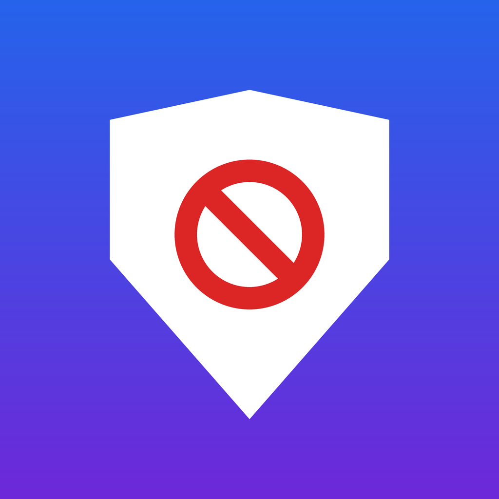

隱私權政策
生效日期：2026 年 10 月 6 日
一句話說明
ShieldBlock 不收集、不儲存、不傳送任何你的個人資料或瀏覽紀錄。
我們沒有帳號系統，沒有分析或廣告 SDK，也沒有自己的伺服器接收你的資料。所有擋廣告、防詐騙與統計都在你的 iPhone 上完成。
在你手機上處理的資料
- 網頁網址：Safari 延伸功能會在手機上比對你開啟的網址，用來套用過濾規則、判斷是否為詐騙網站。網址不會離開你的手機。
- 保護統計：已保護頁面、擋下的彈窗、攔截的詐騙網站次數，以及各網站的次數，只存在手機上，用來顯示在 App 與小工具。刪除 App 即全部清除。
- 你的設定：白名單、自訂規則、隱藏的網頁元素、家庭模式設定（密碼只存加密後的雜湊值）等，只存在手機上。
- 通知：每週保護報告是手機上的本機通知，不經過任何伺服器。
App 會連線到的地方
為了保持規則最新，App 會下載以下公開資料。下載時不會附帶任何你的個人資料；如同一般網路連線，對方伺服器可能會看到你的 IP 位址。
- 過濾清單：從清單作者的公開網址下載（例如 filters.adtidy.org、raw.githubusercontent.com），以及你自己加入的清單網址。
- 詐騙網站資料：從政府開放資料平台（opdadm.moi.gov.tw）下載內政部警政署 165 公布的資料。
- 規則修正檔：從 raw.githubusercontent.com 下載我們發布的規則修正（只包含網域與規則）。
全裝置攔截（DNS）
若你選擇安裝全裝置攔截的 DNS 設定，iPhone 的 DNS 查詢（你連線的網域名稱）會送到你選擇的 DNS 服務商，例如 AdGuard DNS 或 NextDNS，並適用該服務商的隱私權政策。ShieldBlock 不會收到這些資料。不安裝則不會使用。
購買與訂閱
購買與訂閱由 Apple 透過 App Store 處理。我們不會收到你的付款資料、姓名或 Apple ID，只會從 Apple 得知購買是否有效，以開啟 Pro 功能。
兒童隱私
ShieldBlock 不收集任何人的個人資料，包括兒童。家庭模式的所有設定只存在家長的裝置上。
政策變更與聯絡方式
若本政策有變更，會更新此頁並修改生效日期。如有任何問題，請參考客服頁面的聯絡方式。
Privacy Policy (English)
ShieldBlock does not collect, store, or transmit any personal data or browsing history. There are no accounts, analytics, or advertising SDKs, and we operate no servers that receive user data. All filtering, scam detection, and statistics are processed on your device and stay there.
The app downloads public data only: filter lists from their publishers (e.g., filters.adtidy.org, raw.githubusercontent.com, or lists you add), scam-site data published by Taiwan’s National Police Agency (opdadm.moi.gov.tw), and rule fixes we publish on raw.githubusercontent.com. No personal information is sent with these requests; as with any connection, the servers may see your IP address.
If you choose to install the optional system-wide DNS setting, DNS queries are sent to the DNS provider you select (e.g., AdGuard DNS or NextDNS) under their privacy policy. Purchases are handled by Apple; we never receive your payment information or Apple ID.
Effective date: October 6, 2026. Contact: see our support page.